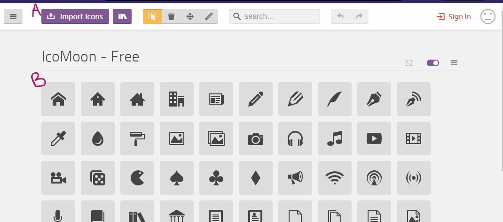

 On sélectionne (B) ou importe nos icones (A) A : Permet d'importer des icones personnalisées. Format .svg ou .json B : Permet de sélectionner des des icônes proposées par icomoon C : Boite à outils
On clique sur le bouton "Generate font" A : Affiche les préférences de notre iconfont B : Affiche le contenu de notre iconfont B1 : icône B2 : nom de l'icône (modifiable) B3 : valeur du caractère C : Permet de télécharger notre iconfont (et tout ce qui va avec) D : Permet de retourner à l'étape précédente
Consignes de la pratique - Partie 2 Aller sur le site icomoon.io (nouvel onglet) Sélectionner des icônes parmi celles proposées par icomoon (8-9) Télécharger l'iconfont (voir explications dans "Afficher / cacher étapes..." (Désarchiver et) Déplacer le contenu de l'archive dans la ressource Lier le fichier .css à la ressource Afficher une icône à côté de chaque champ de formulaire Afficher une icône dans le texte et bien l'aligner Ajouter des transitions au hover (couleur, rotation, échelle...) sur les icônes Voir la documentation de la pseudo-classe ":hover" (nouvel onglet) Voir la documentation des transitions css (nouvel onglet)